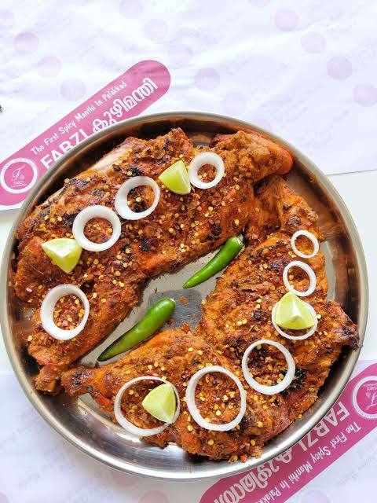

Calling all Kuzhimanthi lovers! Farzi Kuzhimanthi is a restaurant dedicated solely to this delicious Yemeni dish, offering an unlimited feast of chicken Kuzhimanthi perfect for satisfying your cravings. Reviews describe the ambiance at Farzi Kuzhimanthi as casual and relaxed, a comfortable setting to focus on enjoying the star of the show - the Kuzhimanthi. The staff is known for their promptness and courteousness as they cater to your unlimited Kuzhimanthi experience. They're likely happy to explain their unique take on the dish if you're curious.
Now, onto the main attraction! Farzi Kuzhimanthi specializes in unlimited servings of their delicious chicken Kuzhimanthi. Reviews are scarce on specifics, but hopefully, the dish lives up to the hype. The focus here seems to be on their unique take on the traditional recipe. Since Farzi Kuzhimanthi focuses solely on Kuzhimanthi, they likely offer a variety of accompaniments like chutneys and raita to complement the dish, adding another layer of flavor to your experience. Reviews might mention these accompaniments, so be sure to check online for details.
Considering the unlimited portions and focus on chicken Kuzhimanthi, Farzi Kuzhimanthi offers a great value for money. With a big appetite, you're sure to get your money's worth. Overall, Farzi Kuzhimanthi seems like a paradise for those seeking a delicious and satisfying unlimited chicken Kuzhimanthi experience. With its focus on this dish, friendly service, and a casual ambiance, it's a great option for a hearty meal. Be sure to check online reviews for details on any unique aspects of their chicken Kuzhimanthi recipe.
